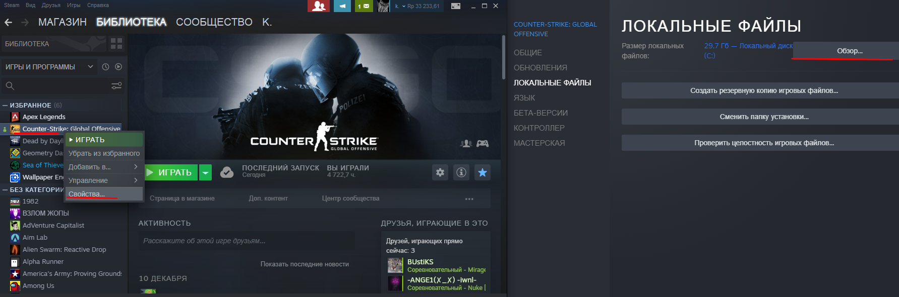
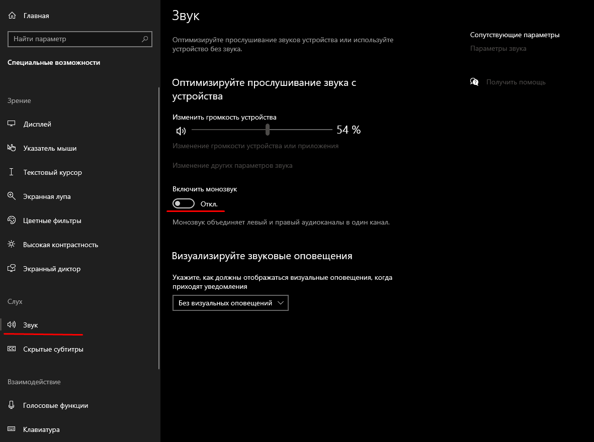

Настройка графики
⠀⠀⠀⠀⠀⠀⠀⠀⠀⠀Если у вас слабый ПК, рекомендую поставить самые низкие настройки графики

Если у вас достаточно мощный ПК, то можете ставить немного другие настройки. При высоких настройках "Детализация шейдоров" можно видеть лучше противника через молотов.
Полезные и нужные бинды
Для удобной игры остро необходимы бинды. В этом разделе покажу от самый полезных биндов, до самых бесполезных, которые ничем не помогут (для фана)
Movement
bind "клавиша" "+speed;r_cleardecals" - очистка крови
bind "MWHEELDOWN" "+jump";bind "MWHEELUP" "+jump";bind "SPACE" "+jump" - прыжок на колесико (вверх и вниз)
bind "клавиша" "toggle cl_righthand 0 1" - менять руки
alias +djump "+jump; +duck";
alias -djump "-jump; -duck"; ⠀⠀- бинд на высокий прыжок с ctrl
bind "SPACE" "+djump"
Для раскида
bind "клавиша" "+jump;-attack;-attack2;-jump" - jumpthrow
bind "клавиша" "incrementvar cl_crosshairsize 1.0 1000 995.5" - прицел для раскида
bind "клавиша" "+forward; -attack; -forward" - runthrow (редко используется)
bind "клавиша" +wjumpthrow - move + jumpthrow
Быстрое исользование предметов
bind "клавиша" "use weapon_flashbang" - взять флешку
bind "клавиша" "use weapon_smokegrenade"- взять смок
bind "клавиша" "use weapon_molotov; use weapon_incgrenade" - взять молотов
bind "клавиша" "use weapon_smokegrenade" - взять хаешку
bind "клавиша" "use weapon_c4; drop;" - дроп бомбы
HUD
bind "клавиша" "incrementvar cl_radar_scale 0.25 3.0 -0.2" - изменение размер радара
bind "клавиша" "incrementvar cl_crosshaircolor 0 5 1" - изменение цвета прицела
bind "клавиша" "apply_crosshair_code код прицела" - изменение прицела
Связь
bind "клавиша" "radio2" - открывается окно с приказами (нужен чтобы бота остановить)
bind "клавиша" "toggle voice_enable" - мут и размут всех игроков
bind "клавиша" "say текст" - сказать текст в общем чате
bind "клавиша" "say_team текст" - сказать текст в командном чате
bind "клавиша" "disconnect" - выход из сервера
Смена цвета худа на ходьбу, выстрел и перезарядку (бесполезно)
bind "s" "+back; r_cleardecals; cl_hud_color 4"
bind "d" "+moveright; r_cleardecals; cl_hud_color 3"
bind "a" "+moveleft; r_cleardecals; cl_hud_color 2"
bind "w" "+forward; r_cleardecals; cl_hud_color 1"
bind "MOUSE1" "+attack; cl_hud_color 5"
bind "MOUSE2" "+attack2; cl_hud_color 6"
bind "r" "+reload; cl_hud_color 7"
bind "клавиша" "sensevity 99" - делает большую сенсу
Смена клан-тега на ходьбу
1) Дла начало надо вступить на 4 разные группы (можно меньше)
2) Копируем ID 4-х групп и подставляем.
3) Биндим их на ходьбу, к примеру:
bind "w" "+forward;cl_clanid 13971932
bind "a" "+moveleft;cl_clanid 13978274
bind "d" "+moveright;cl_clanid 13976228
bind "s" "+back;cl_clanid 13979332
Бинд на +left (персонаж останавливается после отпущения кнопки)
bind "X" "AfkMod"
alias "AfkMod" "Afk_ON"
alias "Afk_ON" "slot3; ON; alias AfkMod Afk_OFF"
alias "Afk_OFF" "slot1; OFF; alias AfkMod Afk_ON"
alias "ON" "+forward; +left"
alias "OFF" "-forward; -left"
Параметры запуска
При запуске игры, она не всегда делает нужные настройки. Параметры запуска нужны, чтобы при заходе в ксго не писать каждый раз нужные команды
Рекомендуемые параметры ксго для слабых пк: –novid -d3d9ex -tickrate 128 -noforcemparms -high +cl_updaterate 128 +cl_cmdrate 128 +ex_interpratio 1 +rate 128000
Чтобы зайти в параметры запуска нужно кликнуть правой кнопкой мыши по ксго в библиотеке > Свойства > Общие > Параметры запуска
-novid - выключает вступительное видео в КС ГО
-w 640 - задает ширину разрешения экрана в пикселях
-h 480 - задает высоту разрешения экранав в пикселях
-full - запускает игру в полноэкранном режиме
-window - запускает игру в оконном режиме
-noborder - запускает игру в оконном режиме без рамки
-low - запускает игру с низким приоритетом
-high - запускает игру с высоким приоритетом
-dxlevel 81 - для использования DirectX 8.1
-dxlevel 90 - для использования DirectX 9
-heapsize 1048576 - выделяет для игры 2GB оперативной памяти
-noaafonts - отключает сглаживание шрифтов экрана
-freq 144 - для изменения герцовки монитора (для 60 герц это бесполезно)
-soft - запускает игру в графическом режиме Software
-d3d - запускает игру в графическом режиме Direct3D
-gl - запускает игру в графическом режиме Open GL
-noforcemparms - использует настройки кнопок мыши из Windows
-noforcemaccel - использует настройки акселерации мыши из Windows
-noforcemspd - использует настройки скорости мыши из Windows
-nojoy - отключает поддержку джойстика
-noipx - отключает протокол LAN
-noip - для удаления IP-адреса без возможности подключения к серверам
-nosound - отключает звук в игре
-nosync - отключает вертикальную синхронизацию
-console - включает внутриигровую консоль
-dev - для включения мода разработчика
-safe - запускает игру в безопасном режиме и отключенет аудио
-autoconfig - восстанавливает стандартне настройки видео-параметров
-condebug - сохраняет все логи консоли в текстовом файле console.log
-nocrashdialog - отключает отображение некоторых ошибок
+exec name.cfg - для подключения конфига с именем "name"
-allow_third_party_software - отключает Trust Factor
Настройка мыши
В этом разделе я покажу, как отключить акселерацию мыши в игре и в параметрых виндоуса, чтобы в ксго она не плавала
Настройка мыши в Windows
Для начала надо отключить сглаживание мыши в виндоус
Заходим в параметры Виндоус > Устройство > Мышь > Дополнительные параметры мыши > Параметры указателя и убираем галочку с Включить повышенную точность установки указателя

Углубленная настройка мыши
В этом разделе будем менять настройки реестора, тем людям, кому уж очень нужно чувствовать сенсу
Переходите по ссылке и скачивайте этот файл (не бойтесь, вирусов нет), разархивируйте содержимое файла
Скачать файлы
Заходим в MarkC акселарация > MarkC_Windows_10+8.x+7_MouseFix > запускаем файл Windows_7+Vista+XP_Default.reg, жмем да и еще раз да.
Далее выключаем DVR. Это настройка от Xbox, которая запускается по вверх окна ксго, ее надо отключить.
Заходим в Выключение DVR, и запускаем два файла (Disable DVR 1 и Disable DVR 2), жмем да и еще раз да

Последним этапом будем менять настройку мыши в реестре. Этот способ вряд ли, может что-то поменять. Я изменений не увидел, но может вы почувствуйте. Заходим в реестр > нажимаем Win+R и пишем regedit
Ищем этот путь. В параметрах MouseSpeed, MouseThreshold1, MouseThreshold2, кликаем правой кнопкой мыши > Изменить > Ставим значение на 0.
Консольные команды для буста фпс, autoexec и быстрая настройка карты для тренировки гранат
Консольные команды очень важны в игре, например, поменять руки, прицел, радар и не только. Сейчас я покажу какие консольные команды дадут буст фпс и удобство в игре.
Консольные команды для буста фпс
cl_forcepreload 1 - Включает загрузку информации о текстурах и моделях в самом начале карты
cl_disablehtmlmotd 1 - отключить HTML-моды
cl_disablefreezecam 0 - выключить стоп-камеру
cl_autohelp 0 - Выключить подсказки
cl_showhelp 0 - Помощь на экране cs go
gameinstructor_enable 0 - отключить игрового инструктора
cl_hud_playercount_showcount 0 - показать аватары Steam
cl_detail_avoid_radius 0 - определяет радиус, в котором вы будете видеть всякие мелкие детали на карте
cl_detail_max_sway 0 - та же, что и прошлая команда, только уже не для деталей, а для мусора
cl_detail_avoid_recover_speed 0
cl_windspeed 0 - выключения скорости ветра.
cl_wpn_sway_scale 1 - тряска оружия
func_break_max_pieces 0 - количество обломков, хлама и мусора
mat_hdr_enabled 0 - освещения HDR
muzzleflash_light 0 - отключение дульной вспышки
r_drawtracers_firstperson 0 - убирает летящие пули (я ставлю 1, так удобнее)
r_dynamic 0 - убирает динамику и вспышки
r_drawparticles 0 — убирает почти все анимацию — выстрелы, всплески воды и т.д.
mat_disable_bloom 1 — отключает bloom-эффект
r_avglight 1
r_avglightmap 0
cl_detail_avoid_force 0
убирает двежение, детализацию и размер глаз
r_eyegloss 0
r_eyemove 0
r_eyeshift_x 0
r_eyeshift_y 0
r_eyeshift_z 0
r_eyesize 0
r_cheapwaterend 1 - команда для воды
r_cheapwaterstart 1 - команда для воды
sv_forcepreload 1 - принудительно выполнить предварительную загрузку
dsp_slow_cpu 1 — незначительное снижения качества звука. не советую, но дает буст фпс
m_mouseaccel1 0 - отключение скорости мыши
m_mouseaccel2 0 - тоже самое почти
m_mousespeed 0 - отключение акселерации мыши
fps_max_menu 0 - неограненное количество кадров в меню
fps_max 0 - неограненное количество кадров в игре
net_allow_multicast 0 - отключить настройку многоадресной сети
mat_queue_mode 2 - обязательно ставьте 2
cl_interp_ratio 2 - интерполяция
cl_updaterate 128 - устанавливает максимальное количество пакетов с обновлениями, которые отправляет сервер в секунду
cl_cmdrate 128 - устанавливает максимальное количество пакетов с обновлениями
cl_lagcompensation 1 - Компенсирует разницу в пинге
cl_interpolate 1 - Включает интерполяцию
cl_interp 0.031 - Временной промежуток, через который происходит интерполяция
cl_predict 1 - Предсказание со стороны клиента
cl_predictweapons 1 - Предсказание оружия со стороны клиента
rate 786432 - устанавливает максимальный размер байт в секунду передаваемой информации между игроком и сервером
net_graph 1 - Графа с разными значениями
net_graphheight 64 - Высота графа. Значения 64 и выше
net_graphpos 1 - Позиция графа значения 1, 2 и 3
net_graphproportionalfont 1 - Размер графа 1 большой 0 маленький
Все эти команды прибавляют фпс игре и улучшает индексацию пуль в ксго. Каждую команду можно самому выбрать и вставлять вручную в консоль. Некоторые параметры нужно каждый раз менять при заходе в игру.
AUTOEXEC.CFG
Но зачем заморачивается, если можно сделать autoexec. В него можно записать все эти настройки, и при заходе в ксго, не нужно будет вводить параметры снова.Для этого создаем блокнот и пишем туда все эти консольные команды. Сохраняем с названием autoexec, после точки обязательно пишем .cfg (autoexec.cfg).
Или же можно скачать через гугл диск => autoexec.

Заходим в свойства ксго и этот файл мы переносим в папку cfg.

Далее в параметрах запуска пишем +exec autoexec.cfg.
Теперь при заходе в игру все настройки автоматически применяются.
Настройка карты для тренировки гранат, autoexec, бинды
Чтобы повысить свой скилл вам необходимо знать гранаты на определенных картах, или же вы хотите повторить тактику со своей командой. Для этого вам надо настроить свой сервер. Бесконечная разминка, повтор или траектория гранат, и многое другое нужно самостоятельно использовать консолные команды.
sv_cheats 1 - команда для консоли разработчиков
bot_kick - убирает всех ботов
mp_freezetime 0 - время после начала раунда
mp_maxmoney 300000 - максимальное колличество денег
mp_startmoney 300000 - сколько вначла раунда денег
mp_autoteambalance 0 - убирает баланс команд
mp_limitteams 0 - убирает лимит гранат в инвентаре
mp_maxrounds 999 - максимальное число раундов
mp_timelimit 60 - убирает лимит игроков в команде
mp_buy_anywhere 1 - закупк апо всей карте
ammo_grenade_limit_total 1200 - дает колличество гранат
mp_warmuptime 9999999999999 - установить время разминки
sv_infinite_ammo 1 - бесконечные патроны и гранаты
sv_enablebunnyhopping 1 - включает банихоп
sv_autobunnyhopping 1 - относится к банихопу
sv_grenade_trajectory 1 - включает траекторию гранат
mp_autobalance 0 - убирает баланс
mp_limitsteam 0 - убирает лимит
mp_restartgame 1 - перезапуск раунда
Эти команды нужно по очереди вводить вручную.
Но можно еще проще сделать. Можно так же забиндить на кнопку exec настройку карты или просто ввести exec в консоль.
1) Для этого нужно скачать два файла по ссылке "CFG", trainmap.cfg и trainmapp.cfg (вирусов нет, кфг делал сам)
Скачать CFG
2) Эти два файла мы должны перенести в папку кфг C:\Program Files (x86)\Steam\steamapps\common\Counter-Strike Global Offensive\csgo\cfg
Заходим в ксго, запускаем тренировку с ботами. (обязательно режим обычный, если запустите соревновательный, то при бесконечной разминке вы будете стоять на арене и ксго не будет давать возможности вылететь на ноуклипе) Открывем консоль, пишем:
Или же просто ввести в консоль exec trainmap.cfg и exec trainmapp.cfg
Вот и всё! С помощью двух кнопок вы можете настроить полностью сервер.
bind "кнопка" "noclip" - летать по карте
bind "кнопка" "bot_place" - поставить бота в определенное место
bind "клавиша" "sv_rethrow_last_grenade" - повтор гранаты
bind "клавиша" "host_timescale 1.0" - обычная скорость игры
bind "клавиша" "host_timescale 3.0" - 3х скорость игры (для тренировки смоков, чтобы долго не ждать)
cl_grenadepreview 1 - показывает траекторию полета и отскоков гранаты
r_drawothermodels 2 - включает вх
god - бессмертие
bot_add_ct - добавляет бота кт
bot_add_t - добавляет бота т
bot_stop 1 - остановить бота
bot_stop 0 - активировать бота
give weapon_hegrenade - выдает хае
give weapon_smokegrenade - выдает смок
give weapon_flashbang - выдает флеш
give weapon_molotov - выдает молотов за т
give weapon_incgrenade - выдает молотов за кт
give weapon_decoy - выдает декой
Настройка звука и консольные команды к ним
Так же надо настроить звук, чтобы лучше слышать шаги и выстрелы противника.
Заходим в панель упраавления > Специальные возможности > Звук > Отключаем монозвук
Тип звукового устройства Стереонаушники. Улучшенная обработка 3D-звука у меня включена.
Мои настройки в CS:GO. Тут я убираю лишнии звуки по типу музыки в главном меню, в начале раунда, после смерти и т.д.
Эти команды надо написать в autoexec.cfg, так как они сбрасываюстся после выхода из игры. Они уже будут вписаны в файле.
snd_mixahead 0.05 - Делает все происходящие звуки максимально приближенными к реальному времени (стандартное значение 0.10)
snd_headphone_pan_exponent 1.9 - Улучшает громкость звучания с увеличением дистанции, за счет чего можно услышать громче звуки которые происходят далеко от вас (стандартное значение 1) При желании значение можно изменить до 3
snd_front_headphone_position 45.0 - Помогает в создании более объемного звучания для фронтальных звуков в игре (стандартное значение 90)
snd_rear_headphone_position 135.0 - Помогает в создании более точных звуков позади вас (стандартное значение 90)
Настройки Nvidia
Настройки драйвера Nvidia нужна для повышение фпс в игре. При определенных настройках можно оптимизировать ксго.
Оптимальные настройки для ксго, эти же параметры импользую я:


Параметр Цифровой интенсивности дает более насыщеную картинку на мониторе, a значит, что его надо менять по своему усмотрению.


Nvidia GeForce Experience
Заходим в игру > Нажимаем Alt+Z > Фильтры. Нажимаем на цифру Cтили 1 > Добавить фильтр > Экпозиция/Контраст и Цвет. Цвет добавляет больше насыщенности.
Позволяет настраивать больше насыщености, яркости, контрасности. Тут уже по вкусу. Каждый ставит настройки разные. К примеру мои параметры такие:

Другие настройки ксго
Для большей скорости игры следует снять галочки в свойствах игры. ПКМ по ксго > свойства.
Если вы не пользуйтесь оверлеем стима, можете смело ее выключать. Синхронизацию сохранений и Игровой кинотеатор отключаем.
Далее отключаем систему ввода Steam

Что бы больше чувствовать мышь следует отключить оптимизацию во весь экран.
Заходим в свойствах игры > ПКМ по иконке игры > Свойства > Совместимость > Ставим галочку на отключить оптимизацию во весь экран


Настройки Steam
Далее мы настраиваем стим, для меньшей нагрузки ПК. Ставим те же настройки, что и на скриншотах


Если не используете Remote Play для записи игры, то отключайте


Отключение ЦП 0
Отключение ЦП 0 дает больше фпс в ксго. Правда каких-то изменений я не заметил, ПК у меня не самый слабый. Возможно это может исправить фризы в игре. Про-игрок Lobanjica, бывший участник FPL, использует эту функцию.
Чтобы это сделать заходим в Диспетчер задач > Подробности > ПКМ по csgo.exe > Задать сходство > Кликаем на ЦП 0, чтобы отключить.